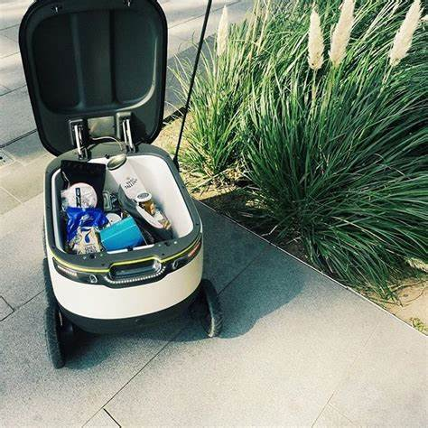

INTELIGENCIA ARTIFICAIAL
La inteligencia artificial (IA) es un campo de la informática que busca crear sistemas capaces de realizar tareas que normalmente requieren inteligencia humana, como el aprendizaje, el razonamiento y la toma de decisiones. Utiliza algoritmos y modelos de datos para analizar información y mejorar su rendimiento con el tiempo. La IA se aplica en diversas áreas, incluyendo la medicina, la automoción, y la atención al cliente, transformando industrias y generando debates sobre ética, empleo y privacidad. Descubre más aquí.
El robot AnyMal de ETH Zurich

Sube escaleras con sus pies. En un mundo donde la tecnología avanza a pasos agigantados, los robots de cuatro patas se están convirtiendo en una herramienta esencial para ayudar a las personas con movilidad reducida. Sube escaleras con sus pies. En un mundo donde la tecnología avanza a pasos agigantados, los robots de cuatro patas se están convirtiendo en una herramienta esencial para ayudar a las personas con movilidad reducida. Sube escaleras con sus pies. En un mundo donde la tecnología avanza a pasos agigantados, los robots de cuatro patas se están convirtiendo en una herramienta esencial para ayudar a las personas con movilidad reducida. Sube escaleras con sus pies. En un mundo donde la tecnología avanza a pasos agigantados, los robots de cuatro patas se están convirtiendo en una herramienta esencial para ayudar a las personas con movilidad reducida. Sube escaleras con sus pies. En un mundo donde la tecnología avanza a pasos agigantados, los robots de cuatro patas se están convirtiendo en una herramienta esencial para ayudar a las personas con movilidad reducida. Sube escaleras con sus pies. En un mundo donde la tecnología avanza a pasos agigantados, los robots de cuatro patas se están convirtiendo en una herramienta esencial para ayudar a las personas con movilidad reducida. Sube escaleras con sus pies. En un mundo donde la tecnología avanza a pasos agigantados, los robots de cuatro patas se están convirtiendo en una herramienta esencial para ayudar a las personas con movilidad reducida. Información.
Un pequeño convoy de robots
Realiza con éxito una cirugía endoscópica. En un mundo donde la tecnología avanza a pasos agigantados, los robots de cuatro patas se están convirtiendo en una herramienta esencial para ayudar a las personas con movilidad reducida. Realiza con éxito una cirugía endoscópica. En un mundo donde la tecnología avanza a pasos agigantados, los robots de cuatro patas se están convirtiendo en una herramienta esencial para ayudar a las personas con movilidad reducida. Realiza con éxito una cirugía endoscópica. En un mundo donde la tecnología avanza a pasos agigantados, los robots de cuatro patas se están convirtiendo en una herramienta esencial para ayudar a las personas con movilidad reducida. Realiza con éxito una cirugía endoscópica. En un mundo donde la tecnología avanza a pasos agigantados, los robots de cuatro patas se están convirtiendo en una herramienta esencial para ayudar a las personas con movilidad reducida. Realiza con éxito una cirugía endoscópica. En un mundo donde la tecnología avanza a pasos agigantados, los robots de cuatro patas se están convirtiendo en una herramienta esencial para ayudar a las personas con movilidad reducida. Realiza con éxito una cirugía endoscópica. En un mundo donde la tecnología avanza a pasos agigantados, los robots de cuatro patas se están convirtiendo en una herramienta esencial para ayudar a las personas con movilidad reducida. Realiza con éxito una cirugía endoscópica. En un mundo donde la tecnología avanza a pasos agigantados, los robots de cuatro patas se están convirtiendo en una herramienta esencial para ayudar a las personas con movilidad reducida. Información.
Entrega de alimentos desde robots
Realiza con éxito una cirugía endoscópica. En un mundo donde la tecnología avanza a pasos agigantados, los robots de cuatro patas se están convirtiendo en una herramienta esencial para ayudar a las personas con movilidad reducida. Realiza con éxito una cirugía endoscópica. En un mundo donde la tecnología avanza a pasos agigantados, los robots de cuatro patas se están convirtiendo en una herramienta esencial para ayudar a las personas con movilidad reducida. Realiza con éxito una cirugía endoscópica. En un mundo donde la tecnología avanza a pasos agigantados, los robots de cuatro patas se están convirtiendo en una herramienta esencial para ayudar a las personas con movilidad reducida. Realiza con éxito una cirugía endoscópica. En un mundo donde la tecnología avanza a pasos agigantados, los robots de cuatro patas se están convirtiendo en una herramienta esencial para ayudar a las personas con movilidad reducida. Realiza con éxito una cirugía endoscópica. En un mundo donde la tecnología avanza a pasos agigantados, los robots de cuatro patas se están convirtiendo en una herramienta esencial para ayudar a las personas con movilidad reducida. Realiza con éxito una cirugía endoscópica. En un mundo donde la tecnología avanza a pasos agigantados, los robots de cuatro patas se están convirtiendo en una herramienta esencial para ayudar a las personas con movilidad reducida. Información.
La "cura funcional" para la diabetes
Realiza con éxito una cirugía endoscópica. En un mundo donde la tecnología avanza a pasos agigantados, los robots de cuatro patas se están convirtiendo en una herramienta esencial para ayudar a las personas con movilidad reducida. Realiza con éxito una cirugía endoscópica. En un mundo donde la tecnología avanza a pasos agigantados, los robots de cuatro patas se están convirtiendo en una herramienta esencial para ayudar a las personas con movilidad reducida. Realiza con éxito una cirugía endoscópica. En un mundo donde la tecnología avanza a pasos agigantados, los robots de cuatro patas se están convirtiendo en una herramienta esencial para ayudar a las personas con movilidad reducida. Información.
Contactos
contacto@realidadsorprendente.com
Teléfono
+12 85166746
Dirección
CALIFORNIA